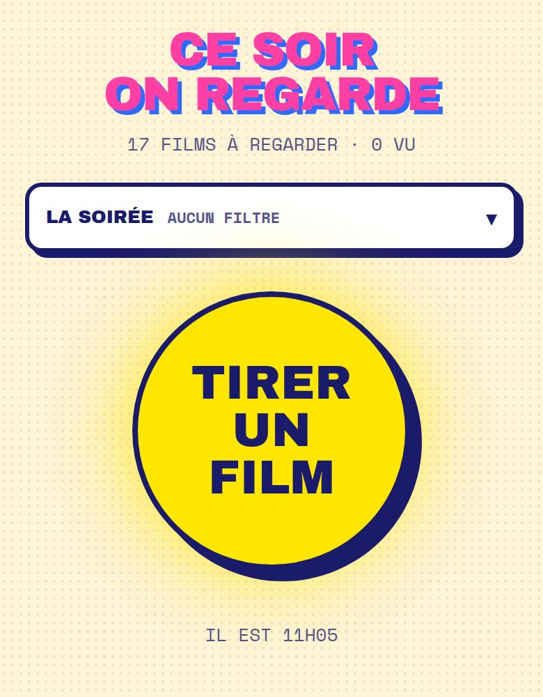
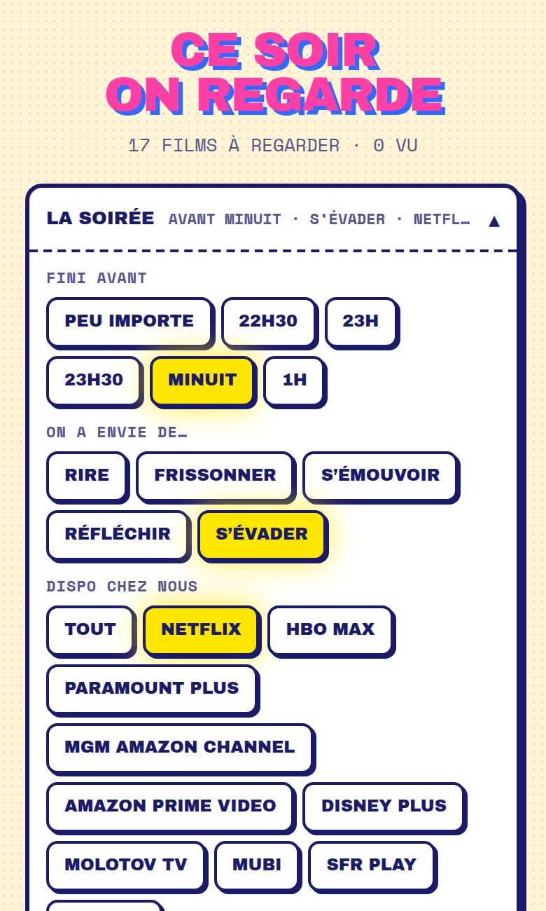
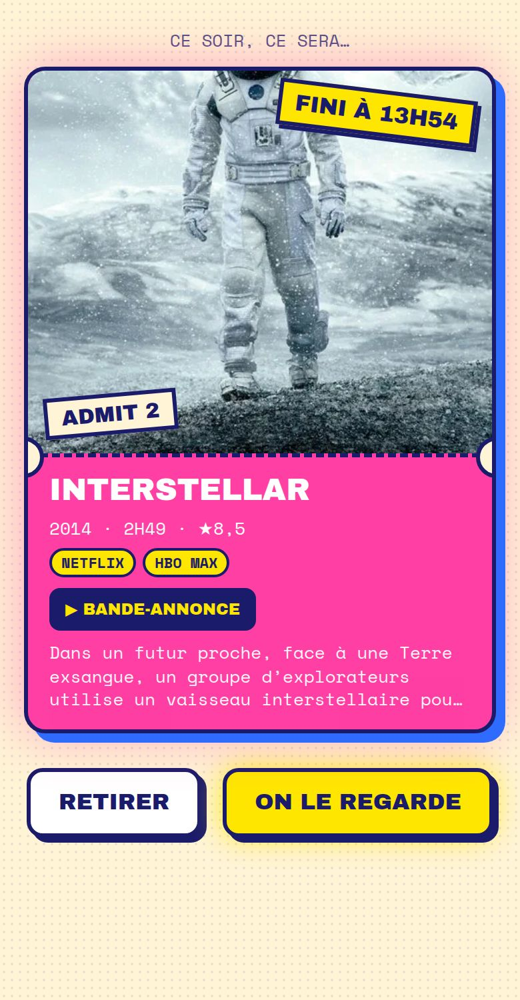
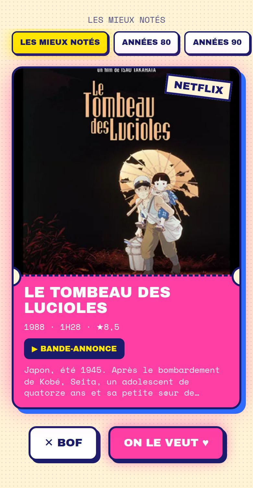
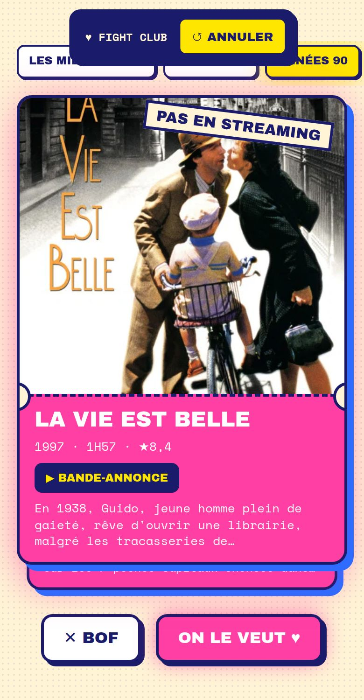

Cinq nouveautés, toutes testées dans un vrai navigateur au format iPhone, sur nos vrais films.

Sous le titre, une ligne LA SOIRÉE résume les filtres du soir (« AUCUN FILTRE », ou « AVANT MINUIT · RIRE · NETFLIX »). Le gros bouton reste en vue : si on ne veut rien régler, on tire comme avant.


Sur le ticket tiré et sur chaque carte de swipe, quand TMDB en a une : la bande-annonce YouTube, en VF si elle existe, sinon en VO. Sur iPhone, ça ouvre l'app YouTube.

Une rangée de puces qui défile : LES MIEUX NOTÉS (comme avant), ANNÉES 80, ANNÉES 90, MOINS DE 1H40, ANIMATION, CINÉMA FRANÇAIS, CINÉMA CORÉEN. Toujours aucun filtre de plateforme au swipe : c'est notre liste qui compte.

Un ♥ ou un ✕ parti trop vite ? Pendant 5 secondes, un bandeau en haut propose d'annuler : la carte revient, la décision est effacée. Si le film avait déjà été décidé sur l'autre téléphone, on n'efface rien chez l'autre.
Suspense, interdit par Next 16 : corrigé avant tout déploiement.we-watch · données TMDB (This product uses the TMDB API but is not endorsed or certified by TMDB) · disponibilités JustWatch